Pokémon × Baskin-Robbins
A global IP carried across two flavours, a goods line and a month of collecting.하나의 글로벌 IP를 두 개의 플레이버와 굿즈 라인, 그리고 한 달의 수집 경험으로 옮겼습니다.
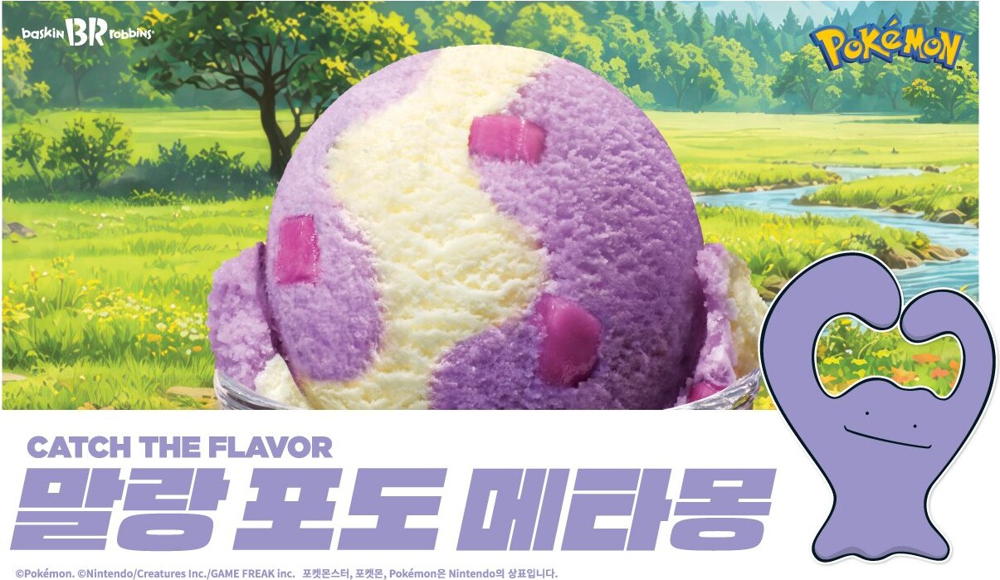
- Client
- Baskin-Robbins Korea
- Location
- Seoul, Korea
- Campaign
- May 2026
- Role
- Creative Marketing Team Lead
- Scope
- IP sourcing, campaign theme, flavour and packaging direction, merchandise, 360 rollout
The brief. May is Family Month in Korea, which makes it the one window where a licence has to work for a five-year-old and a thirty-year-old at the same counter. Pokémon was chosen for exactly that span.
The idea. Catch the flavors: run the month as one system rather than a set of launches, each piece timed so the collecting never stopped mid-month.
What I did. Two flavours of the month, a blast line, pre-order goods and a block pack with collectible figures, carried through posters, cups, drink sleeves, shopping bags, the storefront and a photo zone.
브리프. 5월은 가정의 달이고, 하나의 라이선스가 다섯 살과 서른 살에게 같은 카운터에서 동시에 작동해야 하는 유일한 시기입니다. 포켓몬은 정확히 그 폭 때문에 선택했습니다.
아이디어. Catch the flavors. 개별 출시의 나열이 아니라 하나의 시스템으로 운영하고, 수집이 월 중간에 끊기지 않도록 시점을 배치했습니다.
한 일. 이달의 맛 2종, 블라스트 라인, 사전 예약 굿즈, 피규어가 얹힌 블록팩. 그리고 이것을 포스터, 컵, 음료 슬리브, 쇼핑백, 외장, 포토존까지 이어갔습니다.
Pokémon is a trademark of Nintendo, Creatures Inc. and GAME FREAK Inc. Shown as client work.포켓몬은 닌텐도·크리처스·게임프리크의 상표입니다. 클라이언트 작업으로 게재합니다.
Key visual키 비주얼
Catch the flavorsCatch the flavors
A wild journey with Pikachu and Ditto.피카츄, 메타몽과 함께 떠나는 와일드 저니.
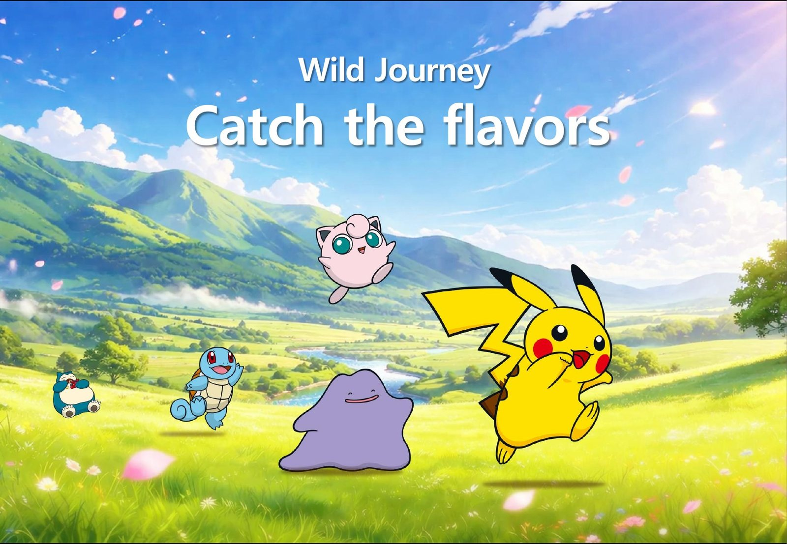
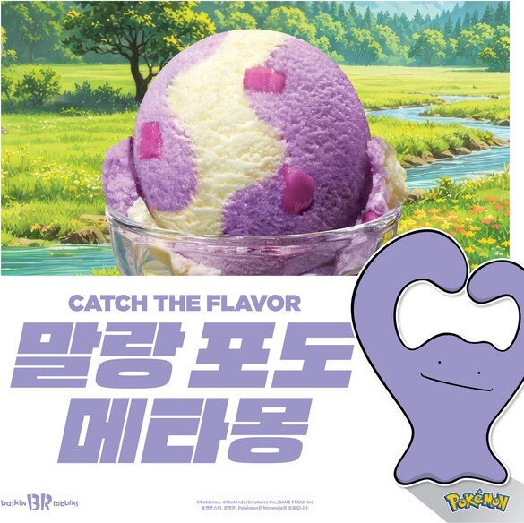
Product제품
Flavours of the month이달의 맛
Ditto and Pikachu, each with its own flavour.메타몽과 피카츄, 각자의 맛.
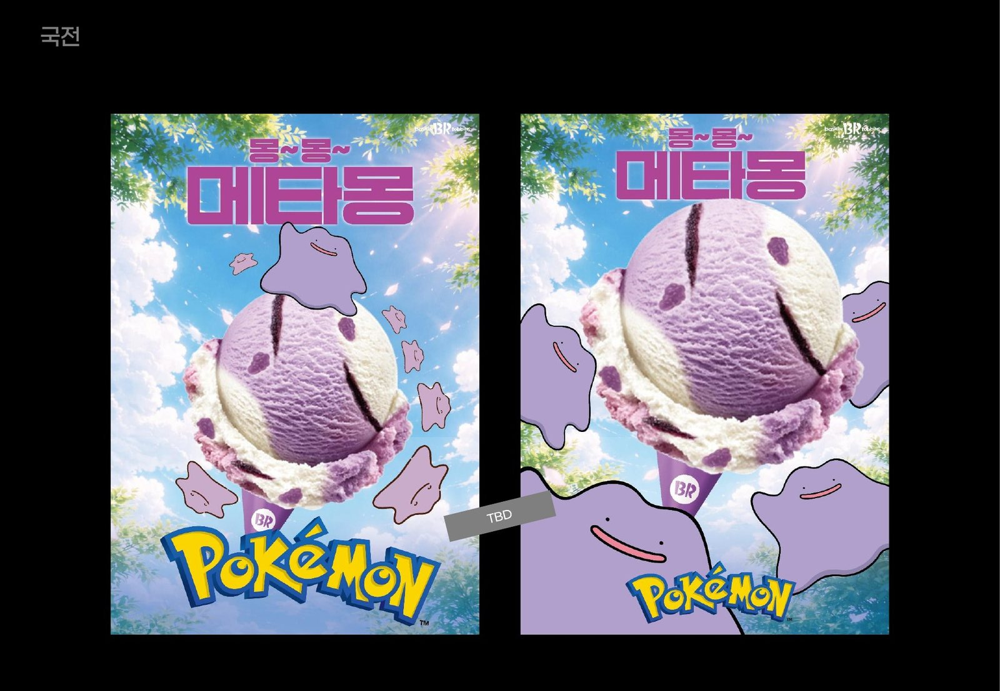
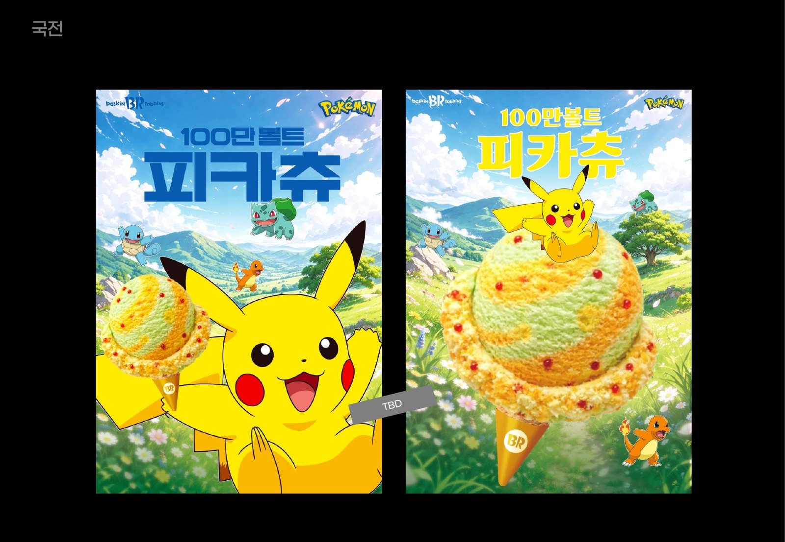
Packaging패키지
Cups, sleeves and bags컵, 슬리브, 쇼핑백
The meadow carried onto everything you hold.손에 드는 모든 것에 초원을 옮겼습니다.
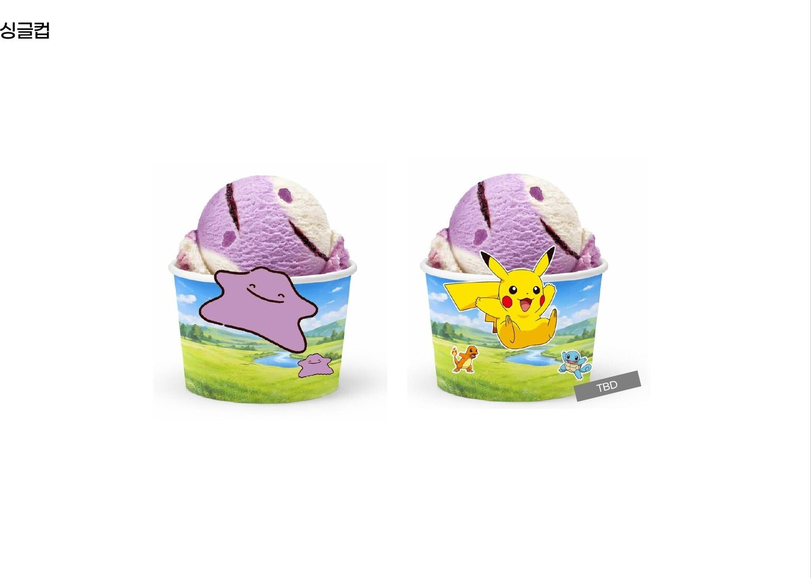
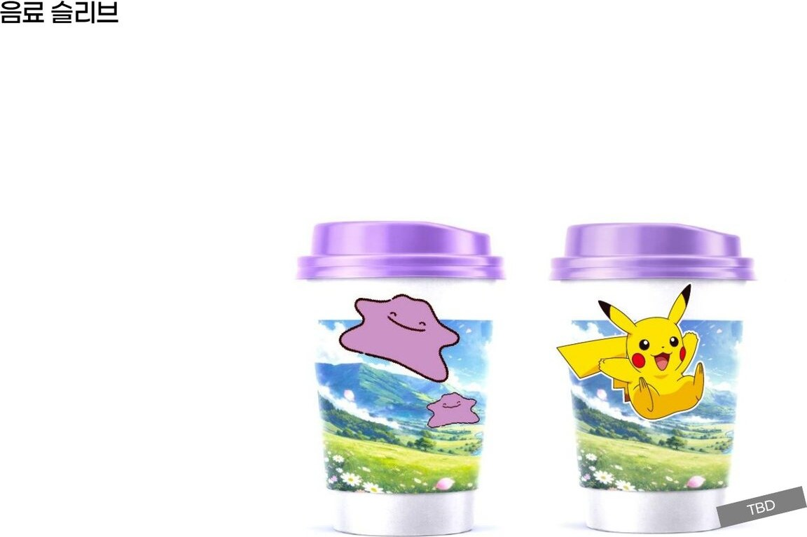
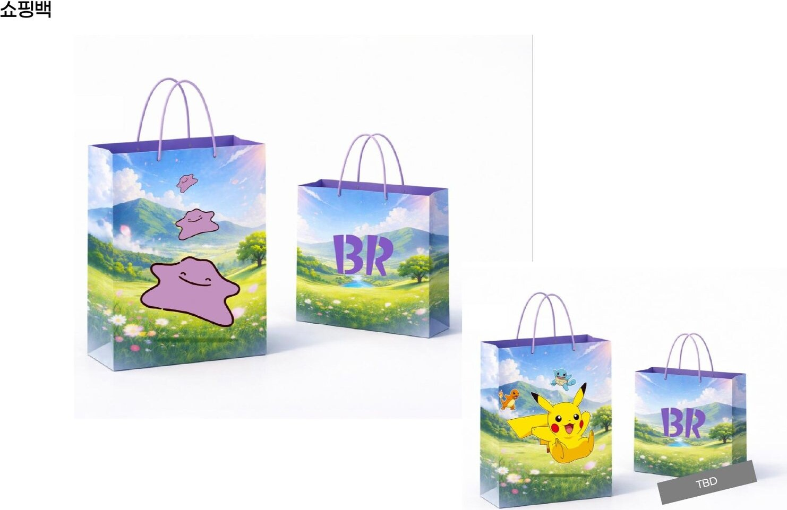
Goods굿즈
Collectable goods모으는 굿즈
Play cup, container, umbrella, lunch box and tumbler.플레이컵, 컨테이너, 우산, 도시락, 텀블러.
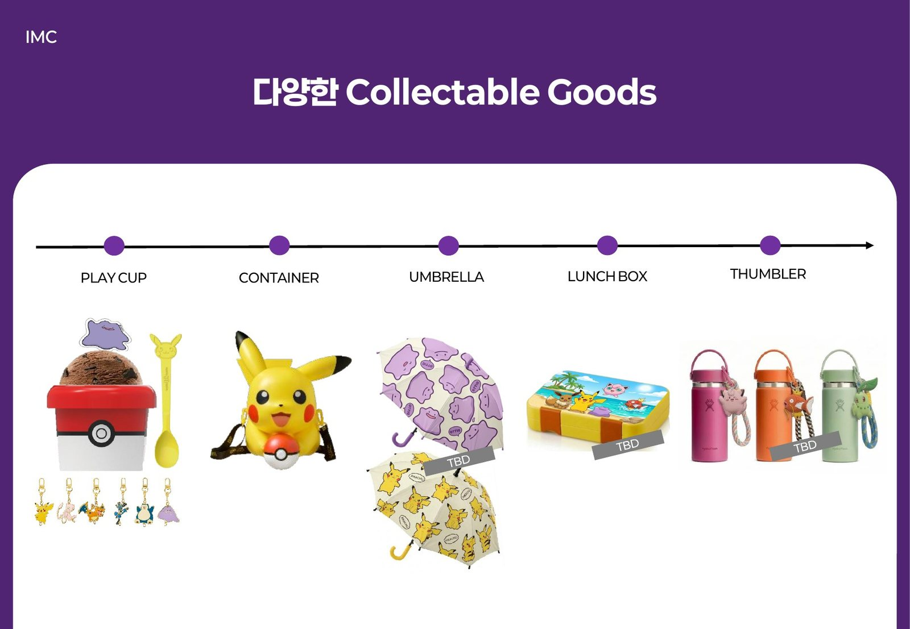
Store매장
Storefront and photo zone외장과 포토존
A Ditto-covered storefront, a photo zone and the MD display.메타몽이 붙은 외장, 포토존과 MD 진열.
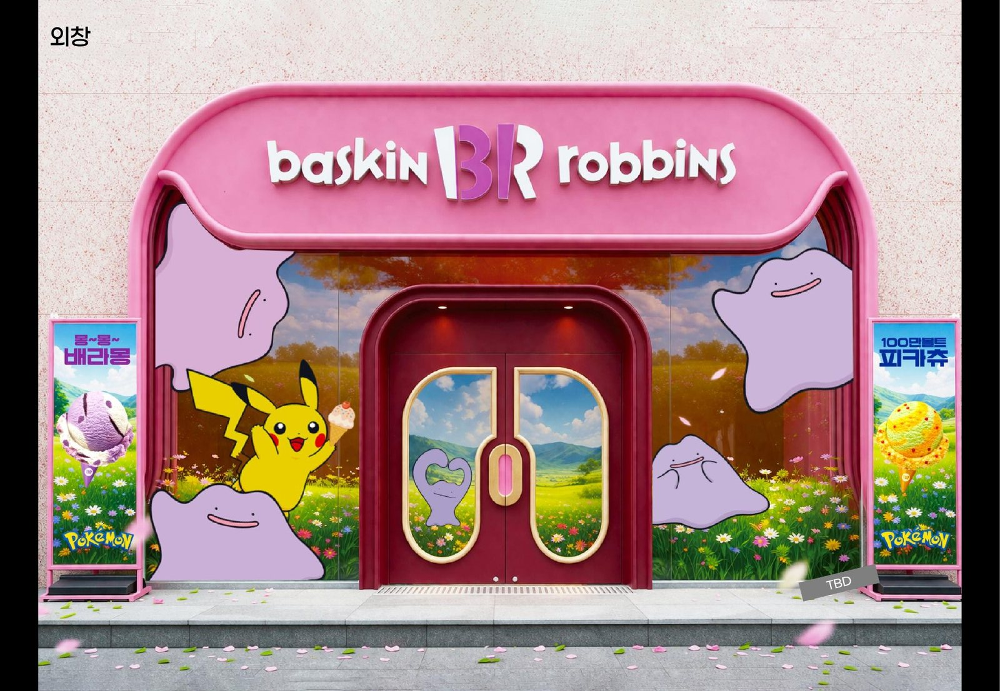
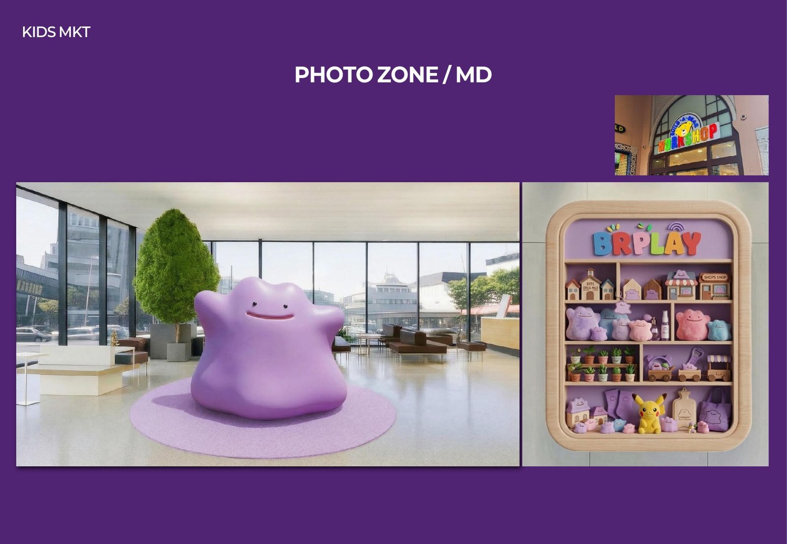
Campaign캠페인
One journey, every touchpoint하나의 여정, 모든 접점
The IMC journey from poster to bag, cup, sleeve and storefront.포스터부터 쇼핑백, 컵, 슬리브, 외장까지 이어지는 IMC 여정.
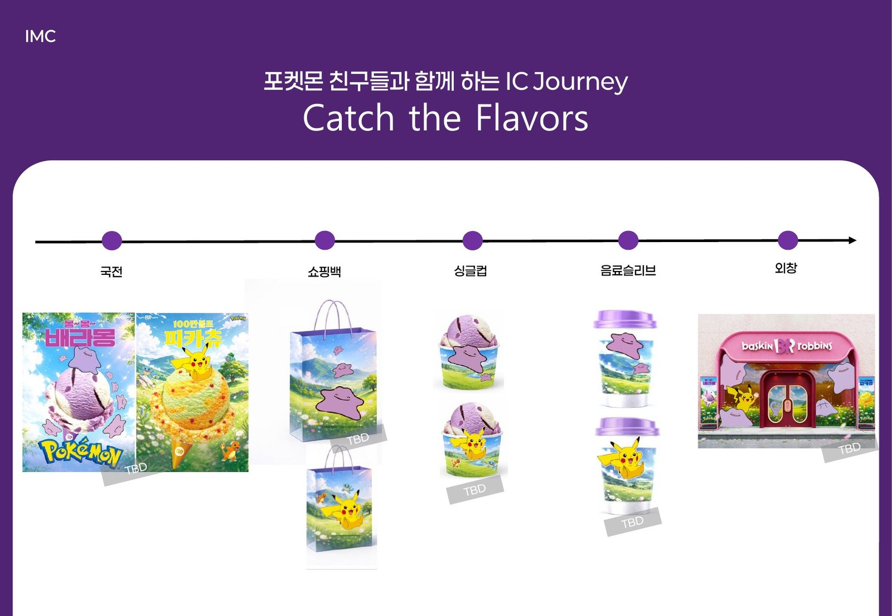